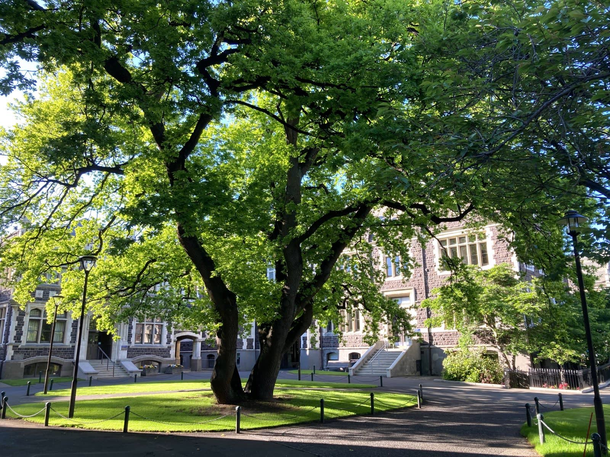

01
1クラス20名前後のゼミ
入学直後から少人数ゼミに所属します。先生と学生の距離が近く、質問や発言の機会が自然と増えます。
【 大学について 】
建学の精神、学長からのメッセージ、これまでの歩み。光葉女子大学が大切にしていることを紹介します。

光葉女子大学は、女性が自分の意思で学び、社会の中で自分の道を切り拓くための場として生まれました。「学ぶことは、自分の可能性をひらくこと」。この考えは創立以来変わらず、授業や学生生活のすみずみに受け継がれています。
※理念の文言はサンプルです。
【学長メッセージ】
光葉女子大学 学長
〇〇 〇〇
大学選びの時期は、自分が何に向いているのか、何をしたいのか、迷うことも多いと思います。けれど、その迷いはこれから学ぶ人の大切な出発点です。
光葉女子大学では、少人数の授業と、一人ひとりの声に耳を傾ける教職員が、皆さんの「知りたい」を支えます。4年間をかけて、自分の言葉で考え、選び、行動できる人へ。キャンパスでお会いできる日を楽しみにしています。
※メッセージはサンプルです。
女子教育の場として始まった学園は、時代とともに学びの領域を広げてきました。
※年号・沿革は公式情報に差し替えてください。
【沿革】
【 光葉の4つの特色 】
入学直後から少人数ゼミに所属します。先生と学生の距離が近く、質問や発言の機会が自然と増えます。
全学共通科目として、チームで課題を解決するプロジェクト型授業を全員が履修します。
2週間の短期研修から1年間の交換留学まで、語学力や目的に合わせてプログラムを選べます。
個別面談、卒業生との交流会、インターンシップ。卒業後の進路を入学時から一緒に考えます。